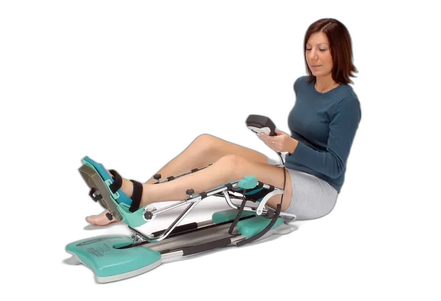
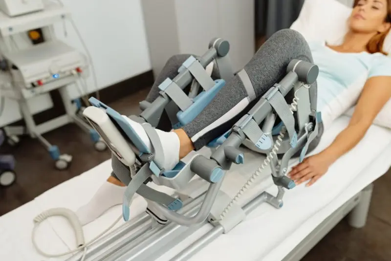

Oporavite koljeno kod kuće
Nakon operacije koljena, svaki dan bez rehabilitacije je korak unatrag. S našim Kinetek aparatom započnite terapiju već sutra, u udobnosti vlastitog doma, uz podršku fizioterapeuta koji prati Vaš napredak.

Zašto je oporavak nakon operacije koljena tako zahtjevan?
Prva dva tjedna nakon operacije koljena su ključna. Bez kontinuiranog pasivnog razgibavanja, zglobna čahura se steže, stvaraju se priraslice i pokretljivost se smanjuje. Problem je što većina pacijenata u tom periodu nema pristup odgovarajućoj opremi.
Istraživanja pokazuju da pacijenti koji započnu pasivno razgibavanje unutar 48 sati nakon operacije postižu puni opseg pokreta i do 40% brže od onih koji čekaju na početak rehabilitacije u bolnici ili klinici.
Liste čekanja za fizikalnu terapiju su duge, termini ograničeni, a kupovina Kinetek aparata za kratkoročnu upotrebu jednostavno nije isplativa.
Rješenje: profesionalni aparat u Vašem domu
Naš servis omogućuje Vam pristup medicinskom Kinetek aparatu bez kupovine, bez čekanja i bez komplikacija. Vi se fokusirate na oporavak, mi brinemo o svemu ostalom.

Od upita do oporavka u 4 koraka
Bez papirologije, bez čekanja. Cijeli proces je osmišljen da bude jednostavan i brz.
Javite nam se
Pošaljite nam WhatsApp poruku s osnovnim informacijama o operaciji.
Odaberemo plan
Zajedno s fizioterapeutom odredimo trajanje i intenzitet terapije.
Dostava i edukacija
Donosimo aparat, postavljamo ga i objašnjavamo kako ga koristiti.
Oporavak počinje
Koristite aparat prema programu, a mi smo na raspolaganju za sva pitanja.
Što možete očekivati?
Kontinuirana pasivna terapija donosi mjerljive rezultate koji ubrzavaju povratak normalnom životu.
Brži oporavak
Pacijenti koji koriste Kinetek kod kuće prosječno se oporavljaju 2 do 4 tjedna brže.
Veći opseg pokreta
Redovito pasivno razgibavanje sprječava stvaranje priraslica i čuva fleksibilnost zgloba.
Manje boli
Kontrolirano razgibavanje smanjuje oticanje i bol, što znači manje potrebe za lijekovima.
Transparentne cijene bez iznenađenja
Svaka opcija uključuje dostavu aparata, edukaciju, podršku fizioterapeuta i servis. Nema skrivenih naknada.
Za kraću rehabilitaciju ili probu aparata. Minimalno trajanje najma je 10 dana.
RezervirajteIdealno za standardnu rehabilitaciju od 4 do 8 tjedana nakon operacije koljena ili kuka.
RezervirajteZa produženi oporavak ili medicinske ustanove. Kontaktirajte nas za individualnu ponudu.
Kontaktirajte nasBesplatna dostava za Zagreb i okolicu (30 km). Za ostale lokacije u Hrvatskoj, dostava po dogovoru. Mogućnost izdavanja R1 računa.
Što kažu naši pacijenti
Svaki oporavak je jedinstven, ali povratne informacije su konstantne: brže, lakše, uz podršku.
"Nakon rekonstrukcije prednjeg križnog ligamenta, aparat sam dobio dan nakon izlaska iz bolnice. Fizioterapeut me nazvao svaki drugi dan. Nakon 6 tjedana, kirurg je bio iznenađen mojim napretkom."
"Mama je operirala koljeno s 68 godina. Bojali smo se da neće moći sama koristiti aparat, ali sve je bilo intuitivno. Podrška tima je bila izvanredna, javljali su se i vikendom."
"Kao fizioterapeut koji radi s postoperativnim pacijentima, iznajmljujem Kinetek za svoje pacijente. Kvaliteta uređaja je vrhunska, a cijene fer. Preporučujem svim kolegama."
Ne čekajte s oporavkom
Svaki dan bez terapije produžuje rehabilitaciju. Javite nam se danas i započnite oporavak već sutra.
Javite nam se na WhatsAppČesta pitanja
Ne, uputnica nije potrebna. Dovoljno je da ste imali operaciju koljena ili kuka i da Vam je liječnik ili fizioterapeut preporučio pasivno razgibavanje. Naš fizioterapeut će s Vama dogovoriti program terapije.
Na području Zagreba i okolice, aparat isporučujemo unutar 24 sata. Za ostale dijelove Hrvatske, dostava je moguća unutar 48 sati putem kurirske službe ili osobnom dostavom.
Da. Prilikom dostave detaljno Vam objašnjavamo postavljanje i korištenje. Aparat ima jednostavne kontrole za podešavanje kuta i brzine. Većina pacijenata ga samostalno koristi već nakon prvog pokazivanja.
Naš tim je dostupan WhatsAppom i emailom svaki dan. Ako se pojavi tehnički problem, zamjenjujemo aparat besplatno. Nikada nećete ostati bez terapije.
Da. Kinetek aparat je dizajniran za pasivno razgibavanje koljena, ali postoje i modeli za kuk. Javite nam se s detaljima Vaše operacije pa ćemo Vam predložiti odgovarajući uređaj.
Plaćanje je moguće gotovinom, bankovnim transferom ili karticom. Izdajemo R1 račun za firme i obrtnike. Nema pologa ni depozita.